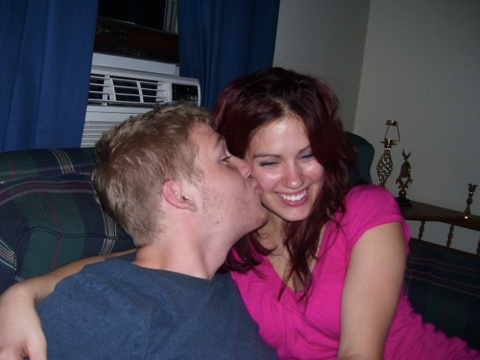
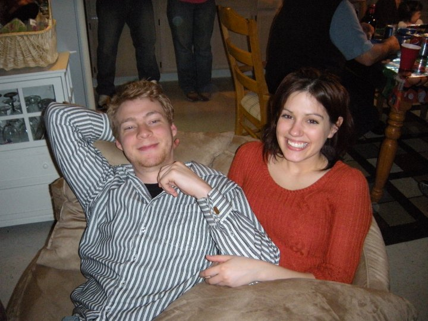
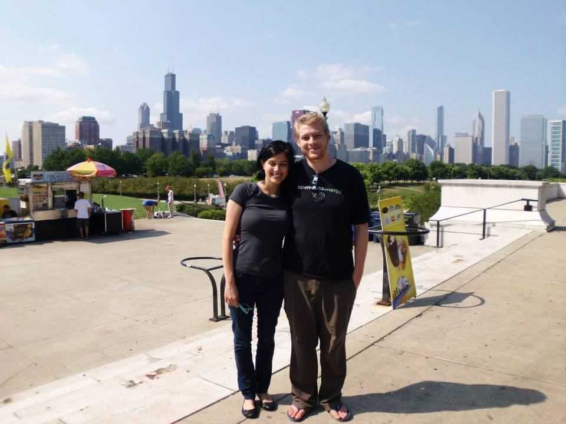

Samantha Louzon and Robert Cooper are getting married!



2016-05-28 17:00:002016-05-28 24:00:00America/DetroitLouzon/Cooper WeddingWedding for Samantha Louzon and Robert CooperFrankenmeuth BrewerySamantha Louzonsammilouzon@gmail.com
Save the date: May 28th, 2016 at Frankenmeuth Brewery in Frankenmeuth, MI.
We hope you'll be able to make it!
Time and hotel reservation details to follow...
If you have any ideas for the ceremony and/or want to read/perform anything, please
contact Jennifer Ryan at: jlouzon@gmail.com or 248.......